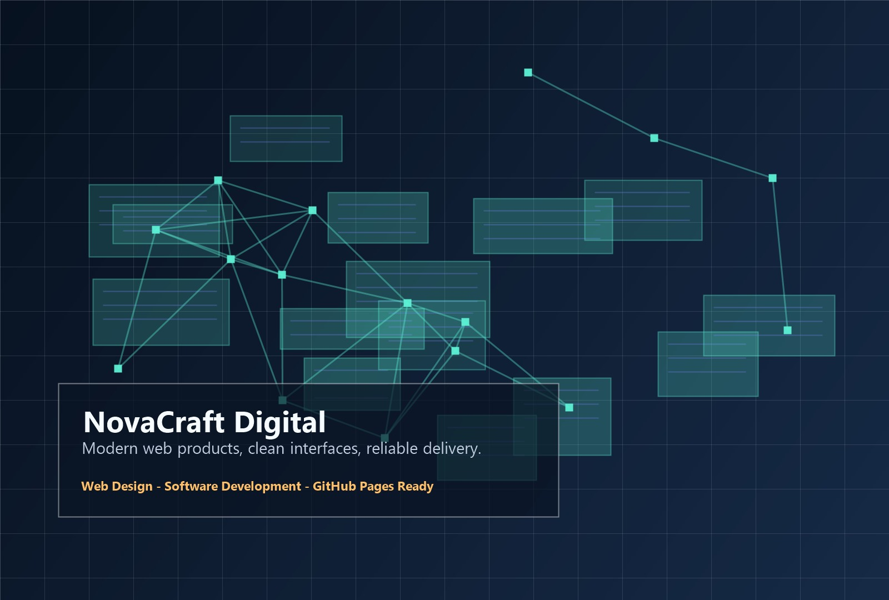
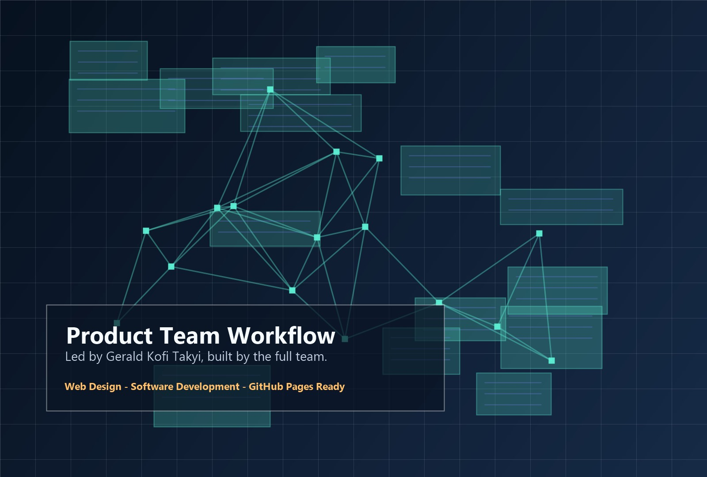

Responsive pages
Student-Led Software Organization
Building modern web products with strategy, design, and code.
NovaCraft Digital is a professional group project for Web Technologies and Software Development, presenting a web/software development organization focused on digital products, clean interfaces, and reliable delivery.

Software Studio
2026
Project Overview
Built to present a modern software studio with clarity and confidence.
This website represents NovaCraft Digital, a fictional student-led web and software development organization created for a university group assignment. It communicates our brand, services, team structure, course context, and implementation workflow through a refined static website that can be deployed directly to GitHub Pages.
Our project focuses on professional web development practices, including user-centered design, responsive interfaces, maintainable code, accessibility, team collaboration, and deployment-ready static site delivery.
Studio contributors
GitHub Pages ready
Framework dependencies
Team Highlights
Five roles, one coordinated product team.
Each member contributes to a focused part of the software delivery lifecycle, from product planning and interface design to implementation, QA, and deployment.
Gerald Kofi Takyi
Project Lead and Product Strategy Coordinator. ID: 2425401682.
Emmanuel Nii Odoi Oddoye
Frontend Interface and User Experience Designer. ID: 2425403812.
Horace Kojo Damtse
Backend Concepts and Systems Workflow Specialist. ID: 2425404571.
Quarshie Philemon Nii Yemo
Testing, Accessibility, and Quality Assurance. ID: 2425403698.
Adino Vandyke
Documentation, Deployment, and Presentation Support. ID: 2425402017.

Featured Collaboration
A workflow made for planning, building, testing, and launching.
Our team uses a structured software studio approach: define the product goal, design the interface, build the pages, validate the experience, document the work, and prepare the project for live deployment.
View our workflow